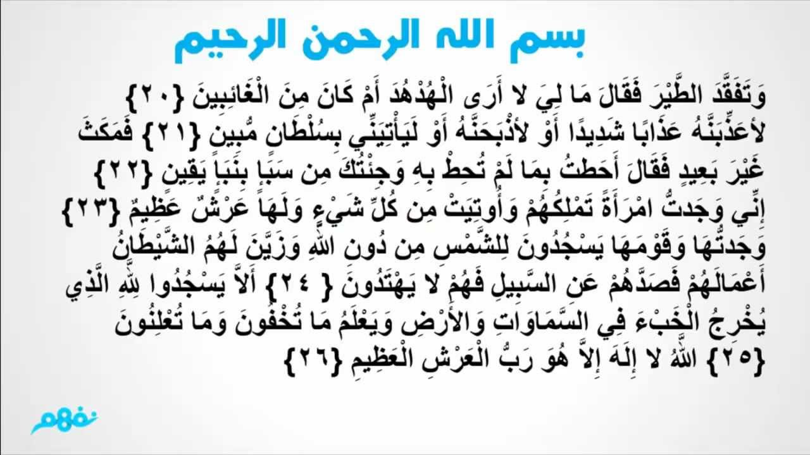

في يوم ما تفقد سيدنا سليمان الطير عنده، فلم يجد طائر الهدهد، فسأل عنه وأخذ يتوعده بالعذاب أو الذبح إذا لم يأته بسبب مهم لغيابه دون معرفة سيدنا سليمان بهذا الأمر وجاء الهدهد بعد وقت غير محدد، حيث أخبر نبى الله سليمان بسبب غيابه وهو أنه وجد قوما في «سبأ» يسجدون للشمس من دون الله، ولهم ملكة على عرش عظيم، وكان الهدهد متعجبا من ذلك، فأراد نبى الله سليمان أن يتحقق من صحة الخبر، وصدق الهدهد، فكتب رسالة إلى ملكة سبأ بلقيس، وأمر الهدهد بأن يلقى بالرسالة إليها، وينتظر ليرى ماذا ستفعل هي وقومها .
ذهب الهدهد بالرسالة إلى النبي سليمان عليه السلام فألقى بها على الملكة دون أن تراه وانتظر ليرى ماذا ستفعل، أمسكت الملكة بالرسالة وقرأتها فتعجبت وجمعت أكابر مستشاريها، قائلة لهم إنها رسالة من سليمان يدعونا فيها إلى الإسلام فما رأيكم فقالوا لها نحن أقوياء ونجيد الحروب لكن القرار لك أنت

إن ما نتعلمه من هدهد سليمان في المشهد الذي بين أيدينا هو:
(قوة الحجة - دقة المعلومة - أمانة النقل - سمو الهمة - ذاتية العمل - إنكار المنكر والغيرة على الحق).